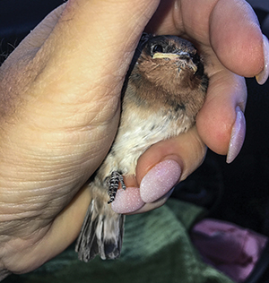

For all sick, injured, and orphaned wildlife in the nation's capital.
ACCESS CANBERRA
13 22 81
For sick or injured kangaroos, snakes, and adult wombats
What to do if you find an injured animal

Note: In the ACT, it is illegal to hold a wild native animal for more than 48 hours unless your are a registered carer or part of a licenced group.
If possible, gently place the animal in a box with a towel or cloth and keep it warm and quiet while you wait for help to arrive.
If you are unable to contain the animal, stay nearby and call our hotline on 0432 300 033 to recieve directions. Do not put yourself in danger.
Seriously injured animals should be taken directly to a vet for treatment.
Flying foxes should not be handled due to the potentially fatal viruses they carry. Please leave their rescue to trained carers.
Avoiding animal stress
When rescuing or containing wild animals, it is important to try keep their stress levels to a minimum. High stresses can worsen an already injured animals condition, and they may even die from this cause alone.
Injured animals should be kept in a safe, quiet place, away from human noises, smells, and pets. The temperature should be warm, but not hot.
More tips
If you find a dead female possum, glider, kangaroo, wombat, or wallaby, check their pouch for a joey. Joeys can survive in their mothers pouch for several days after her death, even after a collision with a car.
Orphan joeys should be wrapped up and kept warm. Do not feed them milk or formula and contact a wildlife carer.